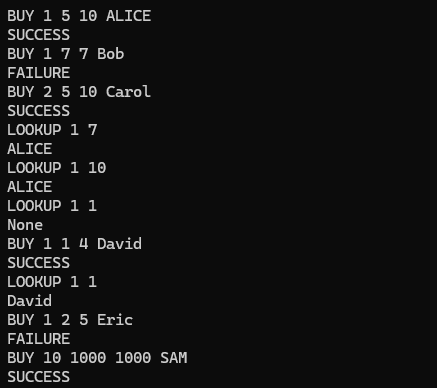

This project was a simulation of a theater seating reservation system. The program utilized dynamic memory allocation to book seats and lookup reservations. It would take in a command (BUY or LOOKUP), and work from there. If the command was BUY, it would ask for a row, start seat, end seat, and name. If none of those seats in that row were taken, it would book successfully. If the command was LOOKUP, it would ask for a row and a seat number, and if the seat was taken, it would return the name of the reservation.

This was my first foray into dynamic memory allocation, and a tough learning experience working with pointers, structs and dynamic memory. I had to learn how to use malloc, free, and how to properly manage memory in a C program. As a result, there is a small memory leak in the program that I was unable to track down at the time. In my opinion, the pointers were the most difficult part of this project, and I had to do a lot of research and trial-and-error to get them working properly. I also had to learn how to use structs to create a linked list for the reservations, which was a new concept for me. I do believe it was a very important foundation for my understanding of higher level C programming than what I had been doing before.